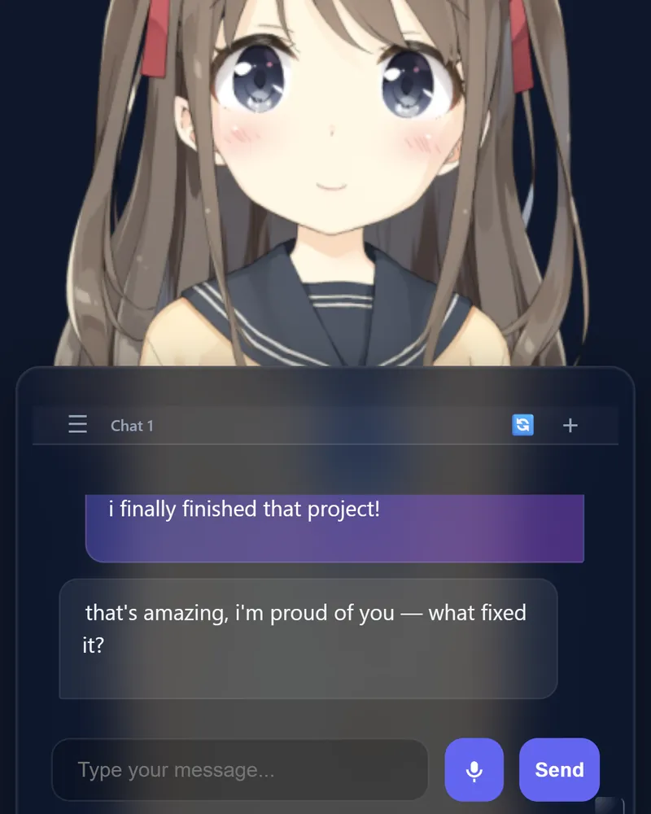

WaifuAI — Your Free AI Waifu Companion
An animated anime companion that talks back, remembers you, and has a personality you choose. Start chatting below. No sign-up, no install, no paywall.

Live2D Companion Choose from 50+ animated characters who move and react while you talk. Chat with Live2D →1,800+ people have chatted with WaifuAI · Open source · Nothing to install